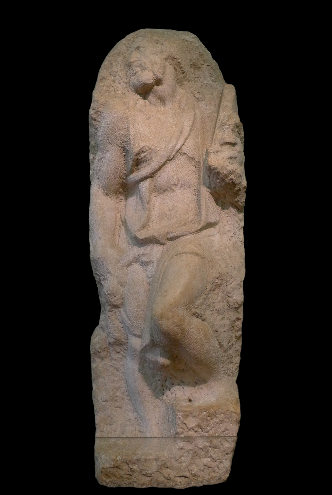

Galleria dell'Accademia Self-researched
Florence, Italy
Artworks
Vallombrosa Altarpiece Self-researched
Also known as the Assumption of the Virgin, this glittering altarpiece features a three-layered composition with God the Father at the top surrounded by cherubs and angels, the Virgin Mary ascending in the middle, and saints below. One of Perugino's major works.

David My Study Self-researched
The commission for Florence cathedral was originally assigned to Agostino di Duccio with a design by Donatello. When Donatello died, the stone was assigned to Michelangelo. The stone was tall but shallow and some work from Agostino had been done already. The statue was designed to be placed on the Florence cathedral's buttress pedestals, on which the boy could look out over the city, gazing to the north. The statue was ultimately placed in front of Palazzo dei Priori (now Palazzo Vecchio). The left arm and hand were damaged in 1527 and preserved by Vasari and Francesco Salviati. The original now stands in the Galleria dell'Accademia, while a replica stands in its original location in Piazza della Signoria.

Saint Matthew My Study Self-researched
One of a series of 12 apostle statues commissioned for the interior of the Florence Cathedral (Duomo) that was never begun. This unfinished work shows Michelangelo's sculptural process—the figure appears to be emerging from the block of marble, demonstrating his concept that the sculptor's task is to liberate the form already present within the stone.
Young Slave Self-researched
An unfinished marble sculpture from the 'Prisoners' series intended for the Tomb of Julius II. The youthful figure appears partially trapped in the marble, exemplifying the dramatic tension between form and material that characterizes Michelangelo's unfinished works.

Bearded Slave Self-researched
The most finished of the Florentine Prisoners, named for the thick, curly beard covering the figure's face. Part of the unfinished series intended for the Tomb of Pope Julius II. The clearly defined muscles of the torso reveal Michelangelo's deep study of human anatomy.
Awakening Slave Self-researched
A 2.67m high unfinished marble statue, one of the 'Prisoners' series for the tomb of Pope Julius II. The figure appears to be struggling to emerge from the stone, dramatically illustrating Michelangelo's belief that the sculptor's task was to liberate the figure already present within the marble block.

Atlas Slave Self-researched
A 2.77m high unfinished marble statue, one of the 'Prisoners' series originally intended for the tomb of Pope Julius II. The figure appears burdened by a massive weight on his head, giving the sculpture its name. After Michelangelo's death, it was given to Grand Duke Cosimo I and installed in the Boboli Gardens until 1909.

Palestrina Pietà Self-researched
A marble sculpture depicting the dead Christ supported by the Virgin Mary and another figure. Formerly attributed to Michelangelo, but now considered to have possibly been completed by someone else, such as Niccolò Menghini or Gian Lorenzo Bernini. The attribution remains controversial.